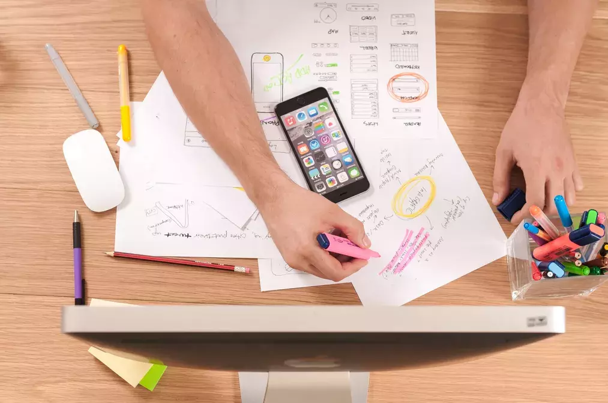

Studying and taking exams can be a stressful experience for many students. The pressure to perform well, manage time effectively, and retain a vast amount of information can lead to heightened stress levels. However, there are several strategies that students can employ to reduce stress and enhance their study and exam experiences. This article presents a collection of practical tips to help students manage stress and perform their best during their academic journey.
1. Create a Well-Structured Study Plan
One of the most effective ways to manage stress is to establish a well-structured study plan. Break down your study material into manageable chunks and allocate specific time slots for each topic. A structured plan helps prevent last-minute cramming and ensures that you cover all the necessary content in an organized manner, reducing anxiety.
2. Practice Active Learning
Engage in active learning techniques such as summarizing, teaching the material to someone else, or creating flashcards. Active learning not only helps you understand the material better but also makes your study sessions more interactive and engaging, which can reduce stress by making studying feel less monotonous.
3. Utilize Mindfulness and Relaxation Techniques
Incorporate mindfulness and relaxation techniques into your routine, such as deep breathing exercises, meditation, or yoga. These practices can help you manage anxiety, improve focus, and boost your overall mental well-being, making it easier to approach studying and exams with a calm and clear mindset.
4. Maintain a Healthy Lifestyle
A balanced diet, regular exercise, and adequate sleep play a crucial role in managing stress. Avoid excessive caffeine and junk food, as they can contribute to anxiety and hinder concentration. Regular physical activity releases endorphins, which are natural stress reducers. Additionally, aim for 7-9 hours of sleep each night to ensure your mind is rested and ready to absorb information.
5. Breaks and Rewards
Frequent short breaks during study sessions can help prevent burnout and maintain focus. After a productive study session, reward yourself with a brief break doing something you enjoy. This positive reinforcement can motivate you to stay on track and reduce the pressure associated with studying for extended periods.
6. Prioritize Self-Care
In the midst of academic pressure, it's essential to make time for hobbies and activities you love. Engaging in enjoyable activities can act as a buffer against stress and keep your overall mood elevated.
7. Practice Past Papers and Simulated Exams
Familiarize yourself with the exam format by practicing past papers and taking simulated exams. This not only boosts your confidence but also helps you manage time effectively during the actual exam, reducing last-minute panic.
8. Visualize Success
Practice positive visualization by imagining yourself successfully completing the exam. Visualizing a positive outcome can help alleviate anxiety and boost your confidence in your abilities.
9. Seek Help When Needed
If stress becomes overwhelming, don't hesitate to seek help from a counselor, teacher, or a mental health professional. Sometimes, discussing your concerns with an expert can provide you with valuable coping strategies and alleviate your worries.
/get help.webp)
In conclusion , stress during studying and exams is a common experience, but it's crucial to manage it effectively to perform at your best. By implementing these tips – creating a structured study plan, practicing active learning, incorporating relaxation techniques, maintaining a healthy lifestyle, taking breaks, connecting with peers, prioritizing self-care, practicing past papers, visualizing success, and seeking help when needed – you can significantly reduce stress and approach your academic challenges with a calm and confident mindset. Remember, your well-being is just as important as your academic success.
The blog is by Site admin(Cgt)